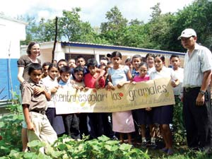
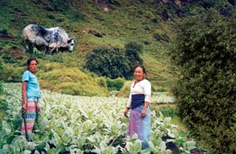
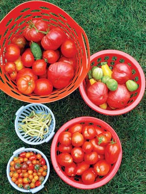
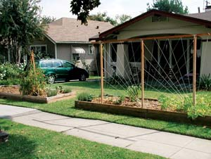
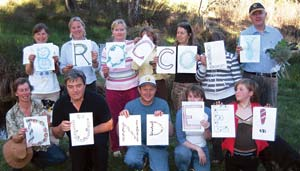
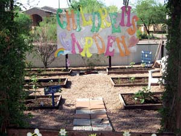

Gardeners are famous for their modesty, often tucking their plots in back yards and other out-of-the-way places. The Grow-Off, Show-Off is an annual contest that celebrates people and projects working to raise the profile of kitchen gardens and introduce more people to the multiple benefits of homegrown foods.
Organized by the nonprofit group, Kitchen Gardeners International, in partnership with Mother Earth News, this year’s Grow-Off attracted entries from across the globe. The judges were struck both by their diversity and their similarities. The budding local foods revolution, it would seem, is indeed a global one.
Centro Escolar Los Gramales (The Gramales Scholastic Center); Gualococti, Morazan, El Salvador (Grand Prize Tie, $250 donated by Mother Earth News). Aiming to add vegetables to the typical community diet of beans, rice and tortillas, the school started a kitchen garden with tomatoes, peppers and pipian, a type of squash. After witnessing the great success of their organic garden, many local parents are now beginning to compost and garden with their children at home.
Gargy Shiksha Sadan; Kathmandu, Nepal (Grand Prize Tie, $250 donated by Mother Earth News). In this cold region dominated by yak farming, a lack of fertile land means few food crops, resulting in malnutrition for many people. This kitchen garden program was launched by Sumitra Pande to improve the health of the community. The two women shown at right are working in their new cauliflower field.
Jennifer Hill; Danbury, Conn. (Second Prize, a portable tiller/cultivator donated by Mantis). Hill inspires new gardeners to take up the trowel by sharing tips and recipes, plus new and unusual kitchen garden varieties from her garden at hilladay.blogspot.com.
Christopher Brandow; Pasadena, Calif. (Third Prize, eco-friendly clothing from Patagonia). Brandow planted his vegetable garden in the front yard due to space constraints. He’s since watched both the vegetables and his community friendships grow, with neighbors dropping by to inquire and sample periodically. Christopher says he now grows conversation, laughter and community among his tomatoes, eggplant and artichokes.
The Hills and Plains Seed Savers; Adelaide, South Australia (Fourth Prize, a $100 gift certificate to Johnny’s Selected Seeds). The Seed Savers have connected with thousands of new and experienced gardeners, locally and - via their blog - internationally. They are “truly making a difference, by telling our own stories, and linking people to Web sites all over the world that offer new and interesting ideas,” at hillsandplainsseedsavers.blogspot.com.
The Children’s Garden at Kachina Country Day School; Paradise Valley, Ariz. (Fifth Prize, organic fertilizer from Neptune’s Harvest). SunflowerOcity.com members revitalized this neglected garden in August 2007. The garden project has sparked additional kitchen garden efforts, inspiring the school to sponsor an “Adopt a School Garden Contest” of their own.
|
 COURTESY LOUISE LILLER Grand Prize tie, the Gramales Scholastic Center in Gualococti, Morazan, El Salvador. |
 COURTESY SUMITRA PANDE The two women shown are working in their new cauliflower field, part of the Gargy Shiksha Sadan program in Kathmandu, Nepal; Grand Prize tie. |
 COURTESY JENNIFER HILL Vegetables from the kitchen garden of second prize winner Jennifer Hill; Danbury, Conn. |
|
 COURTESY CHRISTOPHER BRANDOW Neighbors love to visit third prize winner Christopher Brandow’s front yard vegetable garden; Pasadena, Calif. |
 COURTESY KATE FLINT Fourth prize winner, The Hills and Plains Seed Savers - “Broccoli Dundee” - in Adelaide, South Australia. |
 COURTESY CRISTIE KLINE Fifth prize winner, the Children’s Garden at Kachina Country Day School in Paradise Valley, Ariz. |